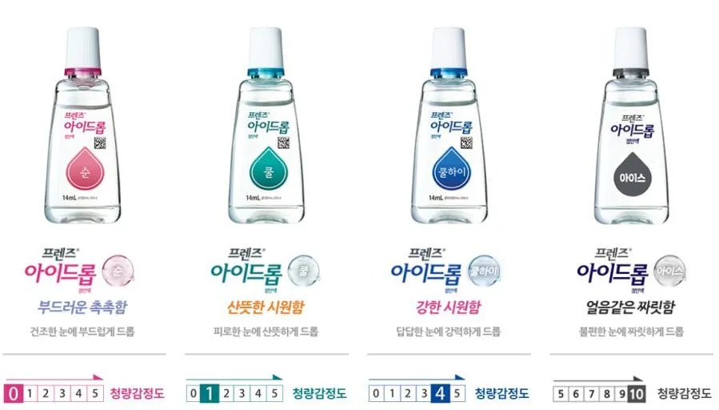

강도별 제품 구분
까만색은 인공눈물계의 알보칠
까만거 많이썼는데

강도별 제품 구분
까만색은 인공눈물계의 알보칠
까만거 많이썼는데
저렇게 센 자극을 주는거면 안구 손상의 여지도 클 거 같은데 아무리 안전하다 해도 스스로 적당히 피하는게 좋을듯
알보칠 개좆밥임
뭐 요즘껀 옅어졌네 어쨋네 그것도 개소리임 ㅋㅋ
공식으로 예나 지금이나 농도 변한 적이 없다고 함
걍 메모리 보정 및 부풀려진 경험담임
https://www.dogdrip.net/688143696
건조증 심하거나 결막염 자주 생기는 사람은 저런 시원해지는거 안쓰는게 좋음
인공눈물은 처방전 받고 사셈
처방전 없으면 대게 만원인데
병원비+인공눈물이 만원보다 쌈
0번 혹은 1번 쓰세요 이상 쓰시면 눈깔 죽습니다. ㅎㄷㄷ
누카콜라를 부었나
난 무조건 핑크쓰는데
이제 다음 버전을 기다립니다